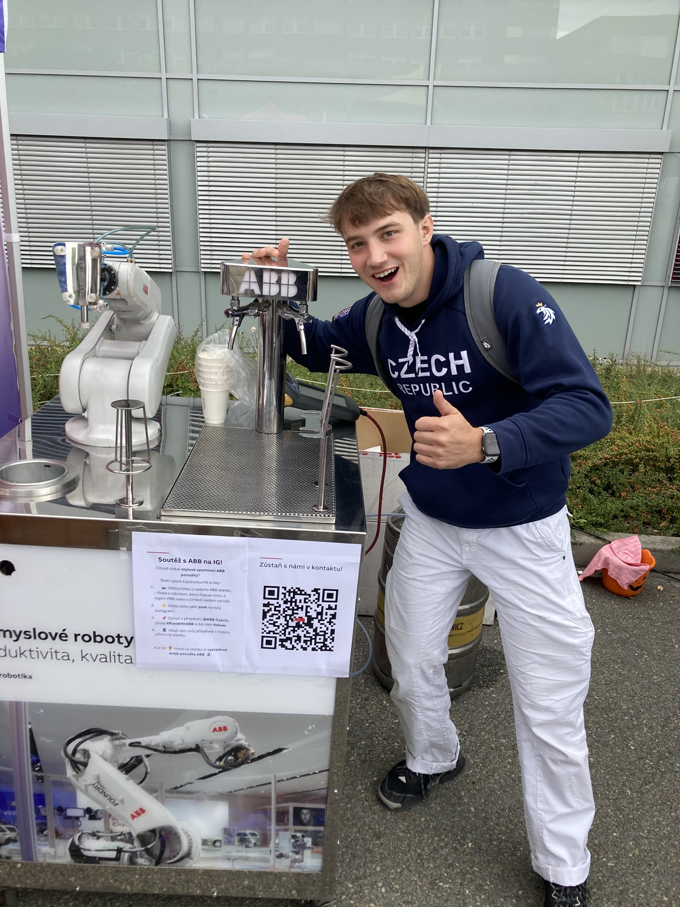

Jmenuji se Tomáš, bydlím ve vesnici u Brna a strojařinu studuji velmi rád. Baví mě práce s různým lidmi a hojně využívám spolupráci s kamarády z jiných koutů evropy. Rád cestuji a užívám si života plnými doušky.
S nulovou znalostí programování si myslím, že web dopadl velmi dobře, tím bych chtěl poděkovat IT masterům Honzovi 1, Albertovi, Honzovi 2, Tomovi, Matymu a panu Floriánovi za trpělivost.
- Vytrvalost
- Konexe
- Out of box thinking
- Pozitivní přístup
- To byla lež, dost se nadávalo :)
Pokud se vám web líbí, ať zde zabloudí budoucí student KSI nebo pan profesor, napiště mi na instagram tomas___vitek nějaký kladný ohlas, rád si připomenu tuto práci.
